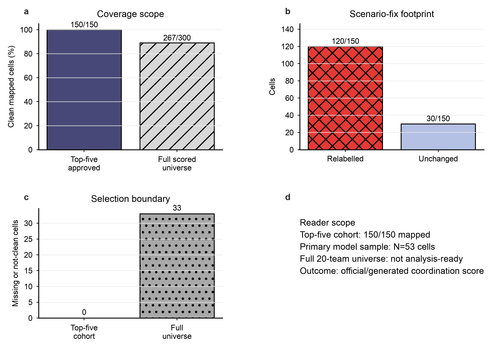
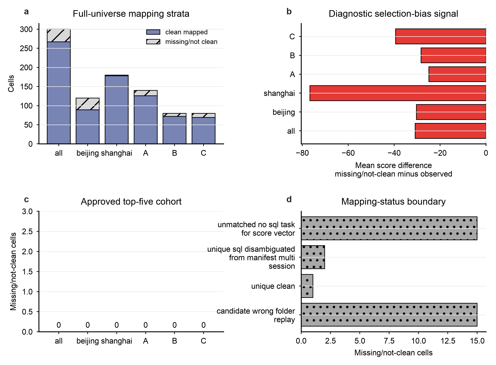
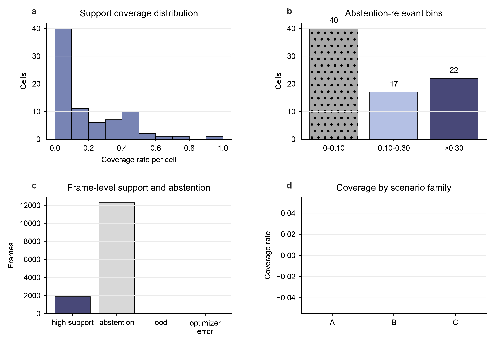
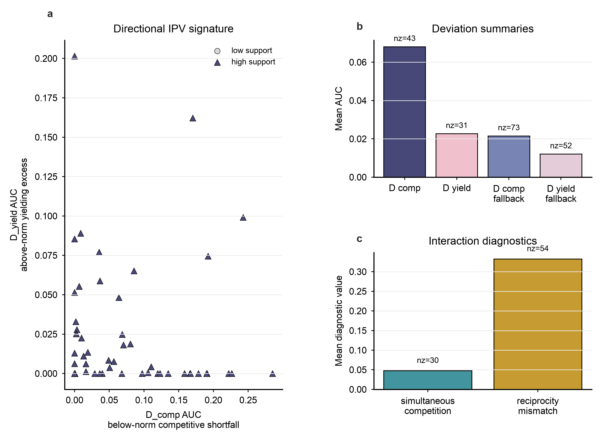
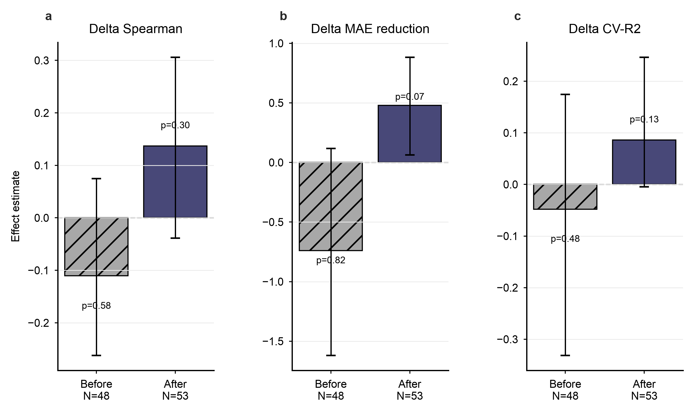
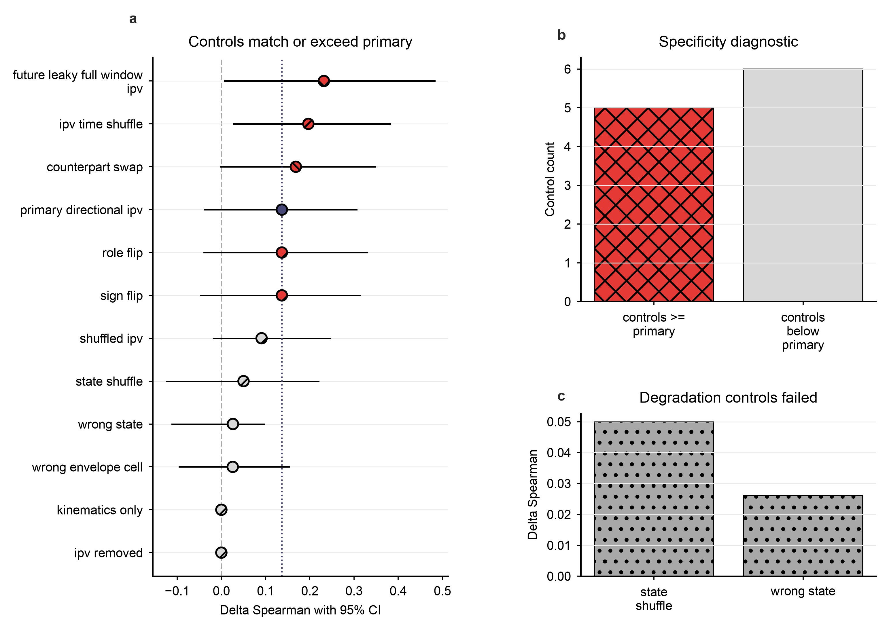
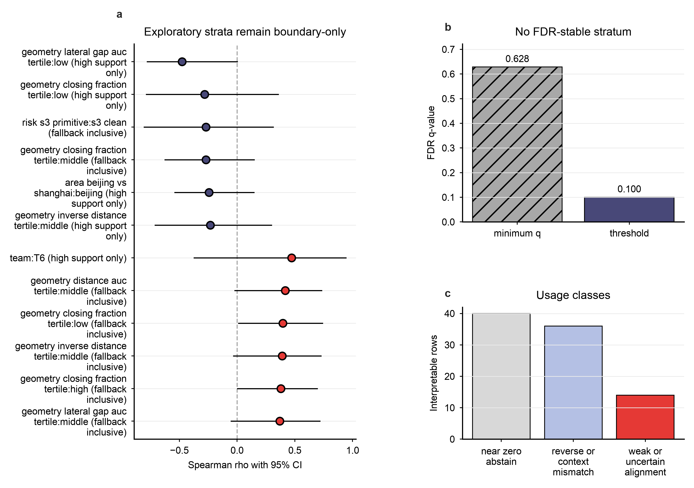
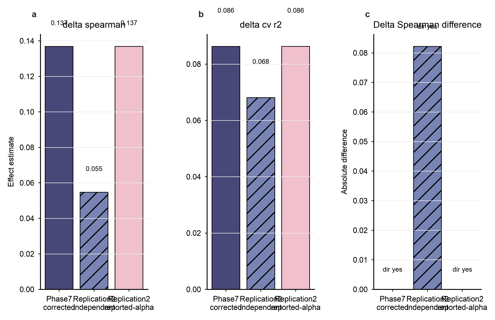
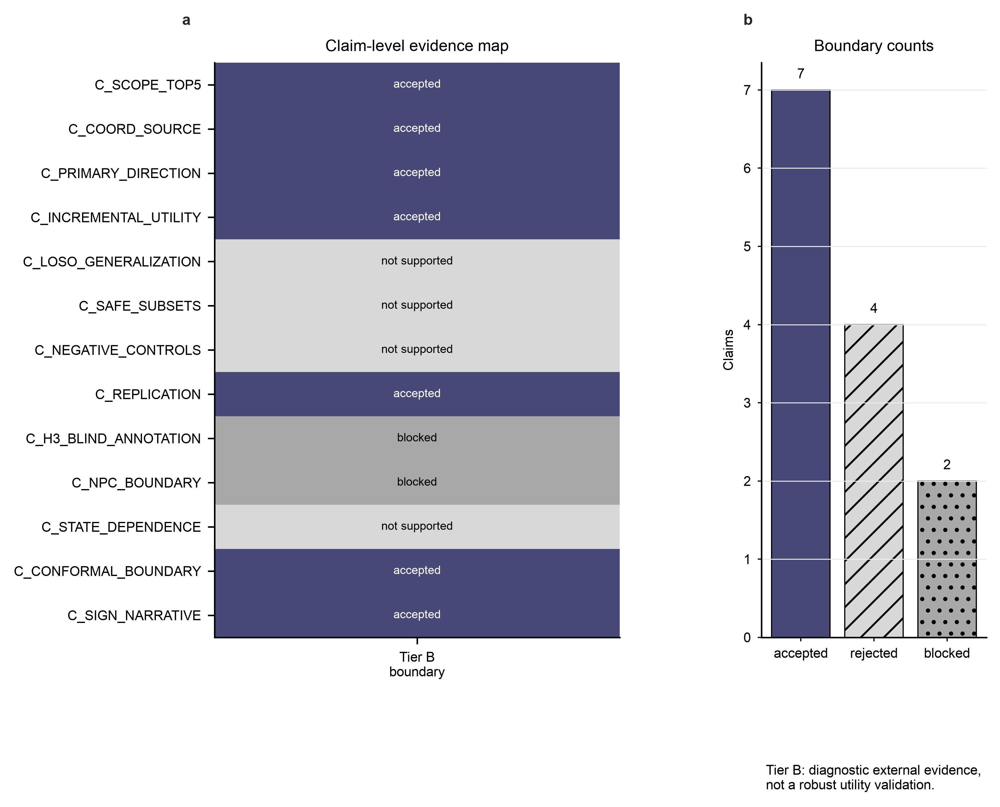

2. Executed vs not executed
The corrected package executed provenance, measurement, frozen confirmatory analysis, controls, state-dependence boundary mapping, replication, red-team closure, and Tier review. It did not execute a full-universe validity analysis, a real two-human blind-annotation analysis, an NPC effect analysis, or any paper edit.
| phase | status | scope |
|---|---|---|
| Gate -1 | PASS | approved_RQ003_plan_top5_cohort_only |
| Gate 0 | PASS | measurement/sign/support boundary |
| Freeze review | PASS | PASS_WITH_PHASE4_CONDITIONS |
| Red team v1 | BLOCKERS_FOUND | scenario-label blocker found |
| Scenario fix | PASS | 120/150 cells relabelled |
| Red team v3 | PASS_NO_BLOCKERS | CLEARED_FOR_TIER_REVIEW_NOT_A_TIER_DECISION |
| Tier review | B | no robust incremental predictive utility relative to the prespecified kinematic+safety baseline was demonstrated (power-limited, top-five cohort, N=53; apparent favorable direction not IPV-specific) |
3. Data sources and coverage
Source data are the corrected post-scenario-fix tables under 01_results/tables/ plus Tier review and interpretation-fix artifacts. The plan was not a strict pre-registration; it is an archived approved plan and freeze package with later correction/review history.

4. Gate -1 provenance
Gate -1 passed for the approved top-five cohort only: 150/150 planned cells had clean usable mapping. The full scored universe remains outside the analysis-ready scope because 33/300 cells are missing or not clean under the clean-mapping definition.

5. Gate 0 measurement
Gate 0 passed the measurement firewall, sign orientation, rolling-window handling, and InterHub-calibrated support-boundary checks. NSFC does NOT support nominal conformal coverage; the conformal element is a support/OOD/abstention boundary.

6. Frozen analysis
The freeze review passed with Phase 4 conditions that were later closed by the real-optimizer directional-IPV check. The freeze was outcome-clean; contaminated earlier freeze-review artifacts were quarantined and are not the active basis.
7. Directional IPV
D_comp marks below-norm competitive shortfall and D_yield marks above-norm yielding excess relative to the InterHub human conditional norm. These are directional diagnostics, not independent behavioral ground truth.

8. Capacity-matched baseline
The prespecified comparison adds directional IPV summaries to a kinematic+safety baseline under matched model capacity. The corrected favorable direction is not sufficient for a utility claim because significance, generalization, and specificity are not established.
9. Held-out CV
The scenario-label fix changed the primary LOTO delta Spearman from -0.110 to 0.137; both intervals cross zero. LOSO was approximately zero and did not establish scenario generalization.
| analysis | N | delta_spearman | CI | p | status |
|---|---|---|---|---|---|
| Before scenario fix primary LOTO | 48 | -0.110 | [-0.262, 0.075] | 0.58 | nonsignificant, pre-fix label path |
| After scenario fix primary LOTO | 53 | 0.137 | [-0.039, 0.306] | 0.3 | suggestive, nonsignificant, non-specific |
| LOSO generalization | 53 | 0.017 | [-0.178, 0.164] | 0.36 | approximately zero; not scenario-general |

10. Negative controls
Negative controls prevent a specificity claim: future-window, time-shuffle, counterpart-swap, role-flip, and sign-flip controls matched or exceeded the primary delta Spearman; degradation controls also failed as diagnostics.

11. Blind annotation status
Blind annotation has NO real two-human results in this package. H3 is BLOCKED: agreement and event-IPV tests were not computed, simulated labels were not generated, and the templates are not evidence.
| h3_status | overall_status | reason | agreement_computed | event_ipv_test_computed | simulated_labels_generated |
|---|---|---|---|---|---|
| BLOCKED | PARTIAL | no real two-human annotations | False | False | False |
12. State dependence
State-dependence results are exploratory boundary mapping. No interpretable row reached q<=0.10, and reverse or low-n rows require abstention rather than rescue interpretation.

13. NPC boundary
NPC pre-onset matching is not identifiable from allowed fields. No NPC effect analysis was run; future wording should be limited to matched opportunity-structure requirements if independent pre-onset evidence is added.
14. Red team
Red-team v1 found a scenario-label blocker and A1 safety-reporting issue. The scenario fix reconciled 150 cells and relabelled 120/150 cells. Red-team v2 found interpretation blockers; the interpretation fix closed them. Red-team v3 reported PASS_NO_BLOCKERS and cleared the package for Tier review.
15. Independent replication
Replication1 was discrepant under an independent model specification. Replication2 used corrected N=53, exactly reproduced the reported-alpha refit direction, and independently reproduced a favorable direction under separate tuning. This verifies implementation soundness, not robust utility.

16. Tier decision
The settled Tier is B: diagnostic alignment without robust independent incremental utility. The conclusion is power-limited, top-five only, and non-specific under controls.

17. Limitations and blockers
- Top-five cohort only; full 20-team universe is not analysis-ready.
- Primary corrected sample is N=53 cells.
- Outcome is an official/generated coordination score, not an independently annotated behavioral endpoint.
- Safe-subset support is mechanical: S1 and S2 duplicate the primary cells, while S3 has n=6.
- H3 is blocked pending real two-human annotation files.
- NPC effect analysis is blocked by missing pre-onset matching fields.
18. Confirmatory/exploratory boundary
Confirmatory: corrected primary LOTO against the prespecified kinematic+safety baseline. Sensitivity: LOSO, LOFO, safe subsets, fallback-inclusive analysis, before/after scenario-fix comparison, and negative controls. Exploratory: state-dependence boundary mapping and NPC feasibility audit. Null, reverse, blocked, and partial results are retained in the report rather than hidden.
19. Reproduction commands
From the repository root:
data/derived/onsite_competition/RQ003_nsfc_external_evidence/RQ003_6_nsfc_ipv_validation_codex_20260620T160628+0800_fbd2d3f0/model_cache/venv/bin/python reports/studies/RQ003_nsfc_external_evidence/RQ003_6_nsfc_ipv_validation_codex_20260620T160628+0800_fbd2d3f0/02_process/19_report_build/build_reader_package.pyThe command rebuilds figures, source CSVs, metadata, report HTML, manifests, and verification status from the corrected tables.
20. Artifact index
All links are relative and offline. HTML entries in 00_entry and 90_report are byte-identical.
- README.md
- TRACEABILITY.md
- evidence.csv
- execution_status.json
- figure_manifest.csv
- nature_skill_manifest.json
- report_build_status.json
- artifact_manifest.csv
| figure | title | source_csv | metadata |
|---|---|---|---|
| fig01_provenance_coverage | Provenance and coverage boundary | 01_results/figures/fig01_provenance_coverage_source.csv | 01_results/figures/fig01_provenance_coverage_metadata.json |
| fig02_missingness_selection_bias | Missingness and selection-bias diagnostic | 01_results/figures/fig02_missingness_selection_bias_source.csv | 01_results/figures/fig02_missingness_selection_bias_metadata.json |
| fig03_support_ood_abstention | Support, OOD and abstention coverage | 01_results/figures/fig03_support_ood_abstention_source.csv | 01_results/figures/fig03_support_ood_abstention_metadata.json |
| fig04_directional_ipv_signature | D_comp and D_yield directional IPV signatures | 01_results/figures/fig04_directional_ipv_signature_source.csv | 01_results/figures/fig04_directional_ipv_signature_metadata.json |
| fig05_scenario_fix_before_after | Capacity-matched comparison before and after scenario correction | 01_results/figures/fig05_scenario_fix_before_after_source.csv | 01_results/figures/fig05_scenario_fix_before_after_metadata.json |
| fig06_negative_controls | Negative-control specificity diagnostic | 01_results/figures/fig06_negative_controls_source.csv | 01_results/figures/fig06_negative_controls_metadata.json |
| fig07_state_dependence_boundary | State-dependence boundary map | 01_results/figures/fig07_state_dependence_boundary_source.csv | 01_results/figures/fig07_state_dependence_boundary_metadata.json |
| fig08_independent_replication | Independent replication agreement | 01_results/figures/fig08_independent_replication_source.csv | 01_results/figures/fig08_independent_replication_metadata.json |
| fig09_tier_b_evidence_map | Tier B evidence boundary map | 01_results/figures/fig09_tier_b_evidence_map_source.csv | 01_results/figures/fig09_tier_b_evidence_map_metadata.json |
21. Claim-level evidence matrix
The evidence matrix records claim status, confirmatory boundary, linked artifact, reviewer status, limitation, allowed wording, and wording warnings.
| claim_id | claim_status | confirmatory_status | artifact_path | figure_id | reviewer_status |
|---|---|---|---|---|---|
| C_SCOPE_TOP5 | accepted | boundary_or_sensitivity | 01_results/figures/fig01_provenance_coverage.png | fig01_provenance_coverage | Tier B accepted boundary |
| C_COORD_SOURCE | accepted | boundary_or_sensitivity | 01_results/figures/fig01_provenance_coverage.png | fig01_provenance_coverage | Tier B accepted boundary |
| C_PRIMARY_DIRECTION | accepted | confirmatory | 01_results/figures/fig05_scenario_fix_before_after.png | fig05_scenario_fix_before_after | Tier B accepted boundary |
| C_INCREMENTAL_UTILITY | accepted | confirmatory | 01_results/figures/fig09_tier_b_evidence_map.png | fig09_tier_b_evidence_map | Tier B accepted boundary |
| C_LOSO_GENERALIZATION | rejected | boundary_or_sensitivity | 01_results/figures/fig05_scenario_fix_before_after.png | fig05_scenario_fix_before_after | not supported as positive evidence |
| C_SAFE_SUBSETS | rejected | boundary_or_sensitivity | 01_results/figures/fig05_scenario_fix_before_after.png | fig05_scenario_fix_before_after | not supported as positive evidence |
| C_NEGATIVE_CONTROLS | rejected | boundary_or_sensitivity | 01_results/figures/fig06_negative_controls.png | fig06_negative_controls | not supported as positive evidence |
| C_REPLICATION | accepted | boundary_or_sensitivity | 01_results/figures/fig08_independent_replication.png | fig08_independent_replication | Tier B accepted boundary |
| C_H3_BLIND_ANNOTATION | blocked | boundary_or_sensitivity | blocked/excluded from Tier basis | ||
| C_NPC_BOUNDARY | blocked | boundary_or_sensitivity | blocked/excluded from Tier basis | ||
| C_STATE_DEPENDENCE | rejected | boundary_or_sensitivity | 01_results/figures/fig07_state_dependence_boundary.png | fig07_state_dependence_boundary | not supported as positive evidence |
| C_CONFORMAL_BOUNDARY | accepted | boundary_or_sensitivity | 01_results/figures/fig03_support_ood_abstention.png | fig03_support_ood_abstention | Tier B accepted boundary |
| C_SIGN_NARRATIVE | accepted | boundary_or_sensitivity | 01_results/figures/fig04_directional_ipv_signature.png | fig04_directional_ipv_signature | Tier B accepted boundary |
22. Paper-handoff summary
Allowed framing: no robust incremental predictive utility relative to the prespecified kinematic+safety baseline was demonstrated (power-limited, top-five cohort, N=53; apparent favorable direction not IPV-specific)
Recommended use is a limitation-aware supplementary diagnostic or short cautionary sentence. This phase did not modify the paper repository, and it does not supply a validation headline.